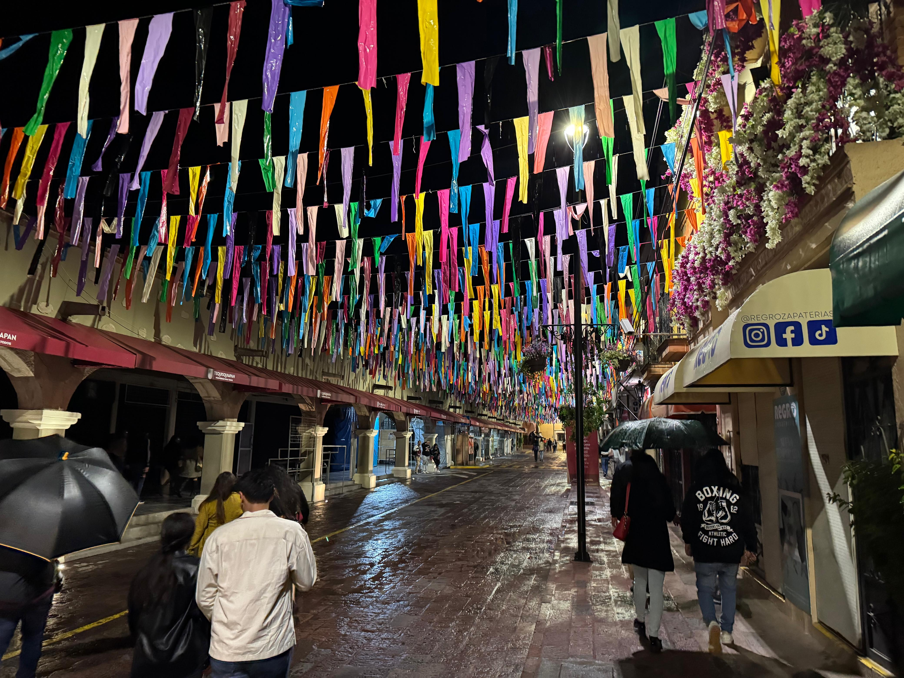
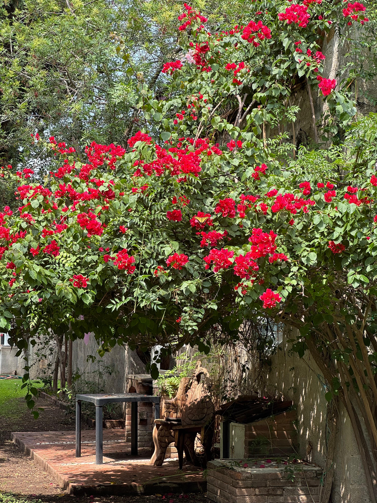
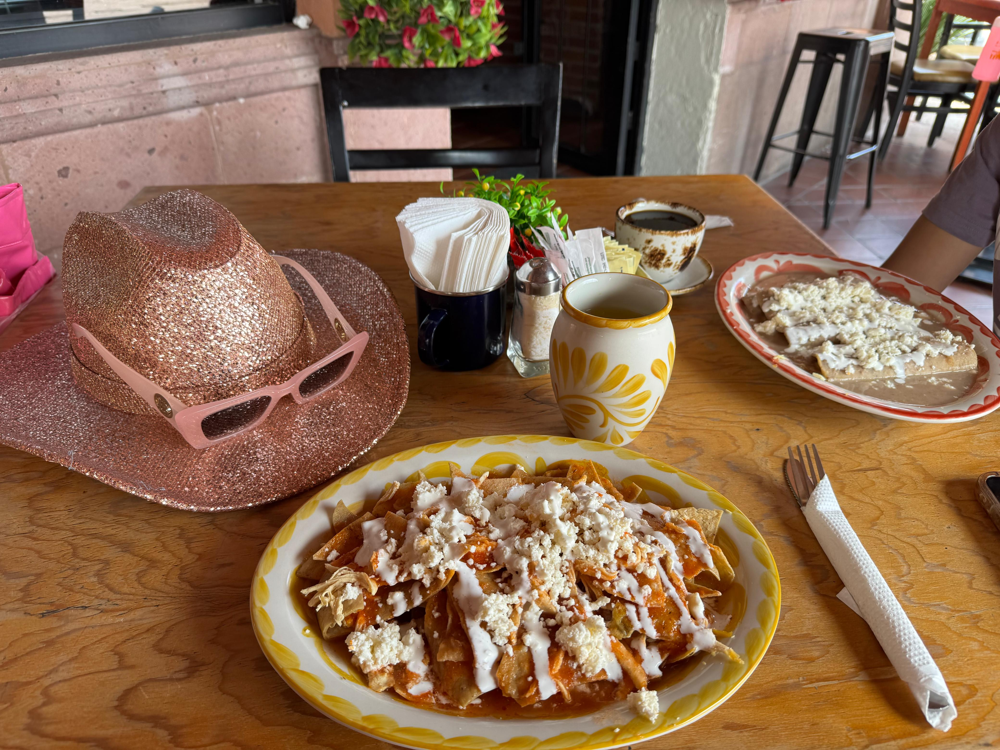

🌸 La Feria del Queso y el Vino, concierto de Motel, más Vino y más
Unas de las escapadas más memorables que hemos tenido.
Esta historia comienza con malas noticias: Estabamos dispuestos a visitar una casa en venta la cual nos gustaba mucho,
sin embargo, recibimos una llamada debastadora: la casa ya estaba vendida.
Pero como dicen, cuando una puerta se cierra, otra se abre. Así que después de unas clases de videojuegos con Dany (nuestro sobrino),
decidimos que era hora de partir a la aventura.
Después de un confuso check-in, nos lanzamos a la Feria del Queso y el Vino. Tardamos un poco en encontrar a personal
del Staff, pero una vez nos dieron el acceso con un par de pulseras, que por cierto, no servian para nada, nos lanzamos
a probar vinos ilimitados y lo mejor de todo, gratis (Cosa que le encanta a mi Pollito).
Por alguna razón, decidimos probar solo vinos rosados y blancos, y vaya que encontramos unos muy buenos. También probamos
algunos quesos, de los cuales, el de ajo fue el más memorable.
Nos compramos una botella de vino blanco, una canastita con queso de ajo y galletas y nos fuimos a bailar con la chaviza
canciones de chavorrucos. Sorprendentemente nos acabamos la botella antes de que comezara el concierto.
Se acercaba la hora del concierto, por lo que nos fuímos a donde estaba el escenario para alcanzar un buen lugar. Nos tocó
hasta enfrente, y mientras esperábamos, fuí por unna botella de vino rosado para disfrutar el concierto.
Descuidé unos minutos a mi Pollito y cuando volví, ya estaba cotorreando con un grupo de chavos que no conocía. Una de
las muchas cualidades que amo de ella, su facilidad para socializar y hacer amigos. Estuvimos platicando un rato en lo que
comenzaba el concierto. Estuvimos compartiendo el vino con los nuevos amigos, y escuchando sus historias, hasta que comenzó el concierto.
Les abrió un par de músicos locales. Para ese momento ya estabamos bastante alegres, pero aún en nuestros 5 sentidos.
Nos tocó hasta enfrente del escenario, se escuchaba bastante bien, pero conforme pasaban las copas, el sonido se volvía más distorsionado.
Mi Pollito estaba disfrutando el concierto, cantando y bailando, se sabía todas las canciones de Motel. Se veía hermosa cantando
a todo pulmón. No podía mas que mirarla y sonreir, mientras ella, cada vez que se daba cuenta que la estaba mirando, me sonreía y me daba besitos.
No recuerdo en qué momento, pero nos lanzamos por otras 3 botellas de vino. Ya estabamos bastante alegres
para ese momento, pero de alguna forma seguimos tomando vino y disfrutando del concierto.

Realmente no podiamos escuchar a detalle las canciones, esabamos demasiado alegres y se eescuhaba borroso todo.
Pero sentiamos el ritmo y la energía de la música.
Finalmente terminó el concierto con "Y te vas". No recuerdo exactamente cómo salimos del parque en donde se hizo el concierto,
pero decidimos no pasar al baño. Empezamos a caminar hacia el Airbnb, que estaba bastante cerca del lugar, sin embargo,
estabamos muy desorientados y yo no sabía por dónde ir. Mi Pollito confiaba plenamente en mí y que sabía como llegar, así que seguimos caminando.
En un momento, Katy reconoció a la cantante que abrió el concierto, y nos acercamos a ella para pedirle una foto.
Seguimos caminando mientras Katy hacía amigos por todos lados. Tomamos algunas fotos de las calles de noche, nos dabamos
besitos y seguimos caminando.

Llegamos a un puesto de tacos y pedímos dos órdenes de tacos al pastor. Intenté pagar por transferencia porque
no tenía efectivo. Ingresé mi contraseña de la banca móvil, pero me equivoqué y la app se bloqueó. Intenté
desbloquearla, y en algún momento perdí la noción de lo que estaba haciendo, y tenía la app de Airbnb abierta.
Mi Pollito se dió cuenta y se burló de mí, diciendo que estaba intentando pagar con Airbnb.
Después de las burlas, logramos pagar los tacos con su banca en línea.
Nos llevamos los tacos para comerlos en el Airbnb, y seguimos caminando. En algún momento, me dí cuenta que no ibamos
en la dirección correcta, por lo que le dije a Katy que regresáramos y buscáramos otro camino. Cuando ibamos de regreso,
ella quizo pasa al baño, y milagrosamente encontramos muchos baños móviles en el camino, los cuáles, no habíamos visto
cuando pasamos por ahí antes. Hasta hoy, seguimos pensando que esos baños aparecieron mágicamente.
Llegamos a un andador que reconocimo porque habiamos pasado por ahí antes, pero estaba cerrado con rejas.
No sabiamos si podíamos pasar por ahí, pero igualmente
pasamos. Caminamos unos metros y nos alcanzó un guardia de seguridad y nos dijo que no podíamos pasar por ahí.
Katy lo convenció de que nos dejara pasar con su carísma y también diciendole que yo estaba a punto de hacerme
popó en los pantalones. Después de eso, nos dejó continuar nuestro camino.
Finalmente llegamos al Airbnb. Y después de un rato, logramos descansar y dormir un poco.
A la mañana siguiente, nos despertamos con un poco de resaca. Pero aún así, visitamos un jardín que se encontraba
en el Airbnb. Era un lugar hermoso, lleno de flores y mariposas. Después de eso, dímos un paseo en el centro, en donde
compramos un hermoso sombrero rosa y almorzamos chilaquiles, enfrijoladas y un delicioso café de olla.

Fué una exclente escapada en donde expreriemntamos por primera y única vez el estar tan "alegres", si saben a que me refiero.
Conocimos a gente nueva, disfrutamos de vino delicioso, excelente música a cargo de Motel y un buen almuerzo.
Esperamos ancioamente la próxima escapada o aventura que nos depare la vida, y poder compartirla con ustedes.
